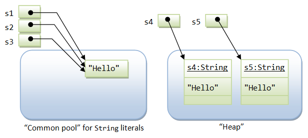

A Brief Summary of the String Class
A Java String contains an immutable sequence of Unicode characters. Unlike C/C++, where string is simply an array of char, A Java String is an object of the class java.lang.
Java String is, however, special. Unlike an ordinary class:
Stringis associated with string literal in the form of double-quoted texts such as "Hello, world!". You can assign a string literal directly into aStringvariable, instead of calling the constructor to create aStringinstance.- The
'+'operator is overloaded to concatenate twoStringoperands.'+'does not work on any other objects such asPointandCircle. Stringis immutable. That is, its content cannot be modified once it is created. For example, the methodtoUpperCase()constructs and returns a newStringinstead of modifying the its existing content.
The commonly-used method in the String class are summarized below. Refer to the JDK API for java.lang.String a complete listing.
// Length int length() // returns the length of the String boolean isEmpty() // same as thisString.length == 0 // Comparison boolean equals(String another) // CANNOT use '==' or '!=' to compare two Strings in Java boolean equalsIgnoreCase(String another) int compareTo(String another) // return 0 if this string is the same as another; // <0 if lexicographically less than another; or >0 int compareToIgnoreCase(String another) boolean startsWith(String another) boolean startsWith(String another, int fromIndex) // search begins at fromIndex boolean endsWith(String another) // Searching & Indexing int indexOf(String search) int indexOf(String search, int fromIndex) int indexOf(int character) int indexOf(int character, int fromIndex) // search forward starting at fromIndex int lastIndexOf(String search) int lastIndexOf(String search, int fromIndex) // search backward starting at fromIndex int lastIndexOf(int character) int lastIndexOf(int character, int fromIndex) // Extracting a char or part of the String (substring) char charAt(int index) // index from 0 to String's length - 1 String substring(int fromIndex) String substring(int fromIndex, int endIndex) // exclude endIndex // Creating a new String or char[] from the original (Strings are immutable!) String toLowerCase() String toUpperCase() String trim() // create a new String removing white spaces from front and back String replace(char oldChar, char newChar) // create a new String with oldChar replaced by newChar String concat(String another) // same as thisString + another char[] toCharArray() // create a char[] from this string void getChars(int srcBegin, int srcEnd, char[] dst, int dstBegin) // copy into dst char[] // Static methods for converting primitives to String static String ValueOf(type arg) // type can be primitives or char[] // Static method resulted in a formatted String using format specifiers static String format(String formattingString, Object... args) // same as printf() // Regular Expression (JDK 1.4) boolean matches(String regexe) String replaceAll(String regexe, String replacement) String replaceAll(String regexe, String replacement) String[] split(String regexe) // Split the String using regexe as delimiter, // return a String array String[] split(String regexe, int count) // for count times only
Static method String.format() (JDK 1.5)
The static method String.format() (introduced in JDK 1.5) can be used to produce a formatted String using C-like printf()'s format specifiers. The format() method has the same form as printf(). For example,
String.format("%.1f", 1.234); // returns String "1.2"
String.format() is useful if you need to produce a simple formatted String for some purposes (e.g., used in method toString()). For complex string, use StringBuffer/StringBuilder with a Formatter. If you simply need to send a simple formatted string to the console, use System.out.printf(), e.g.,
System.out.printf("%.1f", 1.234);
String is Really Special
Strings receive special treatment in Java, because they are used frequently in a program. Hence, efficiency (in terms of computation and storage) is crucial.
The designers of Java decided to retain primitive types in an object-oriented language, instead of making everything an object, so as to improve the performance of the language. Primitives are stored in the call stack, which require less storage spaces and are cheaper to manipulate. On the other hand, objects are stored in the program heap, which require complex memory management and more storage spaces.
For performance reason, Java's String is designed to be in between a primitive and a class. The special features in String include:
- The
'+'operator, which performs addition on primitives (such asintanddouble), is overloaded to operate onStringobjects.'+'performs concatenation for twoStringoperands.
Java does not support operator overloading for software engineering consideration. In a language that supports operator overloading like C++, you can turn a'+'operator to perform a subtraction, resulted in poor codes. The'+'operator is the only operator that is internally overloaded to support string concatenation in Java. Take note that'+'does not work on any two arbitrary objects, such asPoints orCircles. - A
Stringcan be constructed by either:- directly assigning a string literal to a
Stringreference - just like a primitive, or - via the "
new" operator and constructor, similar to any other classes. However, this is not commonly-used and is not recommended.
For example,
String str1 = "Java is Hot"; // Implicit construction via string literal String str2 = new String("I'm cool"); // Explicit construction via new
In the first statement,
str1is declared as aStringreference and initialized with a string literal"Java is Hot". In the second statement,str2is declared as aStringreference and initialized via thenewoperator and constructor to contain"I'm cool". - directly assigning a string literal to a
Stringliterals are stored in a common pool. This facilitates sharing of storage for strings with the same contents to conserve storage.Stringobjects allocated vianewoperator are stored in the heap, and there is no sharing of storage for the same contents.
String Literal vs. String Object
As mentioned, there are two ways to construct a string: implicit construction by assigning a string literal or explicitly creating a String object via the new operator and constructor. For example,
String s1 = "Hello"; // String literal String s2 = "Hello"; // String literal String s3 = s1; // same reference String s4 = new String("Hello"); // String object String s5 = new String("Hello"); // String object
Java has provided a special mechanism for keeping the String literals - in a so-called string common pool. If two string literals have the same contents, they will share the same storage inside the common pool. This approach is adopted to conserve storage for frequently-used strings. On the other hand, String objects created via the new operator and constructor are kept in the heap. Each String object in the heap has its own storage just like any other object. There is no sharing of storage in heap even if two String objects have the same contents.
You can use the method equals() of the String class to compare the contents of two Strings. You can use the relational equality operator '==' to compare the references (or pointers) of two objects. Study the following codes:
s1 == s1; // true, same pointer s1 == s2; // true, s1 and s1 share storage in common pool s1 == s3; // true, s3 is assigned same pointer as s1 s1.equals(s3); // true, same contents s1 == s4; // false, different pointers s1.equals(s4); // true, same contents s4 == s5; // false, different pointers in heap s4.equals(s5); // true, same contents
Important Notes:
- In the above example, I used relational equality operator
'=='to compare the references of twoStringobjects. This is done to demonstrate the differences between string literals sharing storage in the common pool andStringobjects created in the heap. It is a logical error to use(str1 == str2)in your program to compare the contents of twoStrings. Stringcan be created by directly assigning aStringliteral which is shared in a common pool. It is uncommon and not recommended to use thenewoperator to construct aStringobject in the heap.
[TODO] Explain the method String.intern().
String is Immutable
Since string literals with the same contents share storage in the common pool, Java's String is designed to be immutable. That is, once a String is constructed, its contents cannot be modified. Otherwise, the other String references sharing the same storage location will be affected by the change, which can be unpredictable and therefore is undesirable. Methods such as toUpperCase() might appear to modify the contents of a String object. In fact, a completely new String object is created and returned to the caller. The original String object will be deallocated, once there is no more references, and subsequently garbage-collected.
Because String is immutable, it is not efficient to use String if you need to modify your string frequently (that would create many new Strings occupying new storage areas). For example,
// inefficient codes
String str = "Hello";
for (int i = 1; i < 1000; ++i) {
str = str + i;
}
If the contents of a String have to be modified frequently, use the StringBuffer or StringBuilder class instead.
StringBuffer & StringBuilder
As explained earlier, Strings are immutable because String literals with same content share the same storage in the string common pool. Modifying the content of one String directly may cause adverse side-effects to other Strings sharing the same storage.
JDK provides two classes to support mutable strings: StringBuffer and StringBuilder (in core package java.lang) . A StringBuffer or StringBuilder object is just like any ordinary object, which are stored in the heap and not shared, and therefore, can be modified without causing adverse side-effect to other objects.
StringBuilder class was introduced in JDK 1.5. It is the same as StringBuffer class, except that StringBuilder is not synchronized for multi-thread operations. However, for single-thread program, StringBuilder, without the synchronization overhead, is more efficient.
java.lang.StringBuffer
Read the JDK API specification for java.lang.StringBuffer.
// Constructors StringBuffer() // an initially-empty StringBuffer StringBuffer(int size) // with the specified initial size StringBuffer(String s) // with the specified initial content // Length int length() // Methods for building up the content StringBuffer append(type arg) // type could be primitives, char[], String, StringBuffer, etc StringBuffer insert(int offset, arg) // Methods for manipulating the content StringBuffer delete(int start, int end) StringBuffer deleteCharAt(int index) void setLength(int newSize) void setCharAt(int index, char newChar) StringBuffer replace(int start, int end, String s) StringBuffer reverse() // Methods for extracting whole/part of the content char charAt(int index) String substring(int start) String substring(int start, int end) String toString() // Methods for searching int indexOf(String searchKey) int indexOf(String searchKey, int fromIndex) int lastIndexOf(String searchKey) int lastIndexOf(String searchKey, int fromIndex)
Take note that StringBuffer is an ordinary object. You need to use a constructor to create a StringBuffer (instead of assigning to a String literal). Furthermore, '+' operator does not apply to objects, including the StringBuffer. You need to use a proper method such as append() or insert() to manipulating a StringBuffer.
To create a string from parts, It is more efficient to use StringBuffer (multi-thread) or StringBuilder (single-thread) instead of via String concatenation. For example,
// Create a string of YYYY-MM-DD HH:MM:SS int year = 2010, month = 10, day = 10; int hour = 10, minute = 10, second = 10; String dateStr = new StringBuilder() .append(year).append("-").append(month).append("-").append(day).append(" ") .append(hour).append(":").append(minute).append(":").append(second).toString(); System.out.println(dateStr); // StringBuilder is more efficient than String concatenation String anotherDataStr = year + "-" + month + "-" + day + " " + hour + ":" + minute + ":" + second; System.out.println(anotherDataStr);
JDK compiler, in fact, uses both String and StringBuffer to handle string concatenation via the '+' operator. For examples,
String msg = "a" + "b" + "c";
will be compiled into the following codes for better efficiency:
String msg = new StringBuffer().append("a").append("b").append("c").toString();
Two objects are created during the process, an intermediate StringBuffer object and the returned String object.
Rule of Thumb: Strings are more efficient if they are not modified (because they are shared in the string common pool). However, if you have to modify the content of a string frequently (such as a status message), you should use the StringBuffer class (or the StringBuilder described below) instead.
java.lang.StringBuilder (JDK 1.5)
JDK 1.5 introduced a new StringBuilder class (in package java.lang), which is almost identical to the StringBuffer class, except that it is not synchronized. In other words, if multiple threads are accessing a StringBuilder instance at the same time, its integrity cannot be guaranteed. However, for a single-thread program (most commonly), doing away with the overhead of synchronization makes the StringBuilder faster.
StringBuilder is API-compatible with the StringBuffer class, i.e., having the same set of constructors and methods, but with no guarantee of synchronization. It can be a drop-in replacement for StringBuffer under a single-thread environment.
Benchmarking String/StringBuffer/StringBuilder
The following program compare the times taken to reverse a long string via a String object and a StringBuffer.
1 2 3 4 5 6 7 8 9 10 11 12 13 14 15 16 17 18 19 20 21 22 23 24 25 26 27 28 29 30 31 32 33 34 35 36 37 38 39 40 41 42 43 44 45 46 47 48 49 50 51 52 53 54 55 56 57 58 59 60 61 62 |
// Reversing a long String via a String vs. a StringBuffer public class StringsBenchMark { public static void main(String[] args) { long beginTime, elapsedTime; // Build a long string String str = ""; int size = 16536; char ch = 'a'; beginTime = System.nanoTime(); // Reference time in nanoseconds for (int count = 0; count < size; ++count) { str += ch; ++ch; if (ch > 'z') { ch = 'a'; } } elapsedTime = System.nanoTime() - beginTime; System.out.println("Elapsed Time is " + elapsedTime/1000 + " usec (Build String)"); // Reverse a String by building another String character-by-character in the reverse order String strReverse = ""; beginTime = System.nanoTime(); for (int pos = str.length() - 1; pos >= 0 ; pos--) { strReverse += str.charAt(pos); // Concatenate } elapsedTime = System.nanoTime() - beginTime; System.out.println("Elapsed Time is " + elapsedTime/1000 + " usec (Using String to reverse)"); // Reverse a String via an empty StringBuffer by appending characters in the reverse order beginTime = System.nanoTime(); StringBuffer sBufferReverse = new StringBuffer(size); for (int pos = str.length() - 1; pos >= 0 ; pos--) { sBufferReverse.append(str.charAt(pos)); // append } elapsedTime = System.nanoTime() - beginTime; System.out.println("Elapsed Time is " + elapsedTime/1000 + " usec (Using StringBuffer to reverse)"); // Reverse a String by creating a StringBuffer with the given String and invoke its reverse() beginTime = System.nanoTime(); StringBuffer sBufferReverseMethod = new StringBuffer(str); sBufferReverseMethod.reverse(); // use reverse() method elapsedTime = System.nanoTime() - beginTime; System.out.println("Elapsed Time is " + elapsedTime/1000 + " usec (Using StringBuffer's reverse() method)"); // Reverse a String via an empty StringBuilder by appending characters in the reverse order beginTime = System.nanoTime(); StringBuilder sBuilderReverse = new StringBuilder(size); for (int pos = str.length() - 1; pos >= 0 ; pos--) { sBuilderReverse.append(str.charAt(pos)); } elapsedTime = System.nanoTime() - beginTime; System.out.println("Elapsed Time is " + elapsedTime/1000 + " usec (Using StringBuilder to reverse)"); // Reverse a String by creating a StringBuilder with the given String and invoke its reverse() beginTime = System.nanoTime(); StringBuffer sBuilderReverseMethod = new StringBuffer(str); sBuilderReverseMethod.reverse(); elapsedTime = System.nanoTime() - beginTime; System.out.println("Elapsed Time is " + elapsedTime/1000 + " usec (Using StringBuidler's reverse() method)"); } } |
Elapsed Time is 332100 usec (Build String) Elapsed Time is 346639 usec (Using String to reverse) Elapsed Time is 2028 usec (Using StringBuffer to reverse) Elapsed Time is 847 usec (Using StringBuffer's reverse() method) Elapsed Time is 1092 usec (Using StringBuilder to reverse) Elapsed Time is 836 usec (Using StringBuidler's reverse() method)
Observe StringBuilder is 2x faster than StringBuffer, and 300x faster than String. The reverse() method is the fastest, which take about the same time for StringBuilder and StringBuffer.
java.util.StringTokenizer
Very often, you need to break a line of texts into tokens delimited by white spaces. The java.util.StringTokenizer class supports this.
For example, the following program reverses the words in a String.
// Reverse the words in a String using StringTokenizer
import java.util.StringTokenizer;
public class StringTokenizerTest {
public static void main(String[] args) {
String str = "Monday Tuesday Wednesday Thursday Friday Saturday Sunday";
String strReverse;
StringBuilder sb = new StringBuilder();
StringTokenizer st = new StringTokenizer(str);
while (st.hasMoreTokens()) {
sb.insert(0, st.nextToken());
if (st.hasMoreTokens()) {
sb.insert(0, " ");
}
}
strReverse = sb.toString();
System.out.println(strReverse);
}
}
// Constructors StringTokenizer(String s) // Constructs a StringTokenizer for the given string, // using the default delimiter set of " \t\n\r\f" // (i.e., blank, tab, newline, carriage-return, and form-feed). // Delimiter characters themselves will not be treated as tokens. StrintTokenizer(String s, String delimiterSet) // Use characters in delimiterSet as delimiters. // Methods boolean hasNextToken() // Returns true if next token available String nextToken() // Returns the next token // Code Sample StringTokenizer tokenizer = new StringTokenizer(aString); while (tokenizer.hasNextToken()) { String token = tokenizer.nextToken(); ..... }
The JDK documentation stated that "StringTokenizer is a legacy class that is retained for compatibility reasons although its use is discouraged in new code. It is recommended that anyone seeking this functionality use the split() method of String or the java.util.regex package instead."
For example, the following program uses the split() method of the String class to reverse the words of a String.
// Reverse the words in a String using split() method of the String class public class StringSplitTest { public static void main(String[] args) { String str = "Monday Tuesday Wednesday Thursday Friday Saturday Sunday"; String[] tokens = str.split("\\s"); // white space '\s' as delimiter StringBuilder sb = new StringBuilder(); for (int i = 0; i < tokens.length; ++i) { sb.insert(0, tokens[i]); if (i < tokens.length - 1) { sb.insert(0, " "); } } String strReverse = sb.toString(); System.out.println(strReverse); } }
Regular Expression (Regexe), Patterns & Matches (JDK 1.4)
Read "Regular Expression in Java".
LINK TO JAVA REFERENCES & RESOURCES